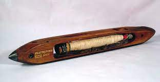

La prima importante innovazione fu la navetta volante, brevettata nel 1733 da John Kay, che permise di spostare meccanicamente il filo da un bordo all'altro del telaio, aumentandone il rendimento. I telai che la montavano erano rapidi che, per rifornirli di filo, occorreva il lavoro giornaliero di 7-8 operai. Così, anche i filatoi divennero più veloci ed efficienti.  In breve tempo le operazioni di filatura e tessitura furono completamente meccanizzate, cioè svolte da macchine: già nel 1833 un solo operaio, assistito da un ragazzo, poteva sorvegliare contemporaneamente il lavoro di 4 telai, producendo 20 volte di più di un tessitore a mano. Nei telai per la tessitura, la navetta volante è il componente che contiene la spola con il filo. Per tessere una stoffa occorre realizzare l'incrocio tra i fili verticali (l'ordito), già fissati al telaio, e i fili orizzontali (la trama), che vengono srotolati dalla navetta nel suo andirivieni da un capo all'altro della macchina. Le navette tradizionali dovevano essere trascinate con entrambe le mani dal tessitore, che a ogni passaggio doveva interrompersi per pettinare i fili, avvicinandoli tra loro. La navetta volante, invece, era azionata con una mano sola: bastava muovere una maniglia e si spostava velocemente e senza fatica. Nel frattempo l'operaio usava l'altra mano per pettinare il tessuto. Dall'ambito dell'industria tessile, il termine navetta (in inglese shuttle) è passato a essere impiegato anche nel vocabolario legato al settore dei trasporti. Ecco perché si definisce "navetta" un veicolo che compie regolarmente e di frequente un percorso di collegamento tra due luoghi. Ed ecco anche perché il più famoso sistema per collegare la Terra e una stazione spaziale orbitante messo a punto dalla NASA fu chiamato Space Shuttle.